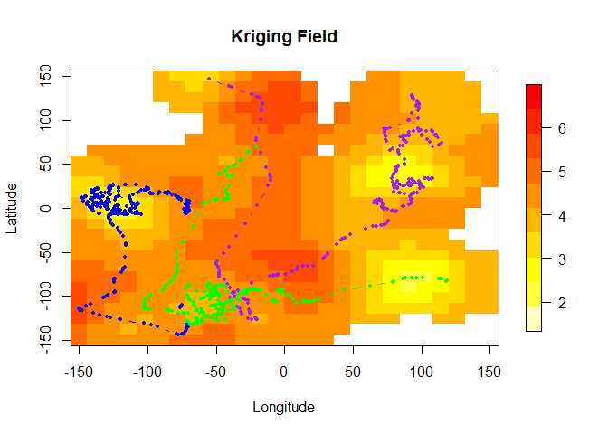
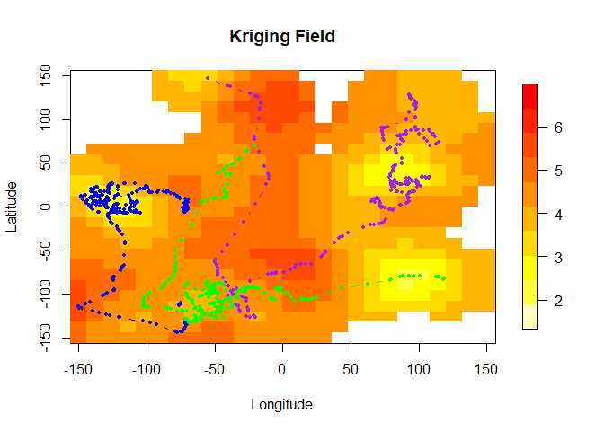
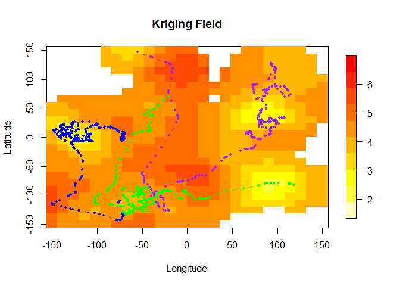

This repository is a companion resource to the paper “Modelling ocean temperatures from bio-probes under preferential sampling” (submitted), by Daniel Dinsdale and Matias Salibian-Barrera and it contains code to illustrate how to apply the methods discussed in that paper.
Below we illustrate how to model data obtained from sensor tags mounted on marine mammals which may have been preferentially sampled. The R code used below in this document can also be found in a single file here: runfile.R. The required functions are in the file dataFncs.R, and the negative log-likelihood function required by TMB is in the file TMBfile.cpp.
The example below follows the simulation settings discussed in Section 4 of the paper and uses the Preferential-CRW model to generate preferentially sampled animal tracks and their corresponding temperature observations. We then compare parameter estimation and prediction using standard methods and the preferential model in TMB.
Note that running this code may require a large amount of RAM (we recommend 16GB).
First we source the file dataFncs.R which contains the necessary functions to generate the data.
source('dataFncs.R')
Now we specify the parameters to generate the data set. These can be altered to vary the properties of the latent field to be sampled and also to change the movement patterns of the sampler. Refer to the paper for more details on the model.
First we set the parameters of the assumed Matern covariance function and the (constant) mean of the underlying random field:
# constant mean mean <- 5 # scale (range) phi <- 25 # nugget (measurement) variance nugget <- 0.1 # smoothness (assumed known in estimation) kappa <- 2 # marginal variance (partial sill) GPVar <- 1.5 # define the covariance model model <- RMwhittle(nu=kappa, var=GPVar, scale=phi) # finally trend = 0 just means our mean trend is constant (mean from above) trend <- 0
Next we specify the parameters that determine the movement/sampler properties. Please refer to the paper for more details on the model and its parameters.
# is starting location random? (0 = yes and >0 multivariate normal with # mean 0 and diagonal covariance matrix with variance=start) start <- 0 # alpha[1] defines starting value of beta_1 from eq (3.6) # alpha[2:3] are currently both equal to \alpha from eq (3.7). They could be changed to # adopt preferential movement varying in strength across latitude/longitude. alpha <- c(-1.5, 100, 100) # the number of tracks in the simulation numTracks <- 3 # the number of data points to simulate per track n <- 360 # the number of observations to throw out per track (ie/ total sample # size per track is n-burnIn) burnIn <- 60 # the rate parameter of the exponential distribution used to generate the sampling times timing <- 10 # measurement location noise (currently not included in models) noise <- 0 # movement parameters # behaviour (beta) standard deviation parameter (\sigma_{\beta} in eq (3.6)) behavSD <- .1 # movement standard deviation parameter (diag(\Sigma) in eq (3.3)) moveSD <- 3 # combine standard deviations for later use dataParam <- c(behavSD, moveSD)
We now create a spatial grid (lattice) for data simulation and also for model fitting/predictions. These can be the same if nrowcol = l (the latter is a lowercase letter L) but we can choose different grid sizes for computational efficiency.
# define the domain to simulate data # how man rows/columns nrowcol <- 51 x <- seq(-150, 150, length.out=nrowcol) y <- seq(-150, 150, length.out=nrowcol) # simulation grid gridFull <- expand.grid(x,y) # l is the number of grid cells in each direction across our # grid going from -150 to 150 degrees lat and lon for our model fitting # and prediction. l <- 26 xseq <- (seq(-150, 150, length.out=l)) yseq <- (seq(-150, 150, length.out=l)) # create the prediction lattice lattice <- expand.grid(xseq,yseq) colnames(lattice) <- c("Y1New", "Y2New")
Now we are ready to generate the data. We first simulate the latent field and then run the sampler using the function genPrefDataHybridBehav which can be found in dataFncs.R. From here we will extract the data and the so-called true surface on the lattice and observed locations.
# simulate the random field set.seed(6351) rawDat <- RFsimulate(model, x=as.matrix(gridFull), exactness=TRUE) # simulate the observations and sampling locations Xsim <- genPrefDataHybridBehav(n=n, movementParam=dataParam, nrowcol=nrowcol, m=0, paramGP=c(mean, phi, nugget, kappa, GPVar), numTracks=numTracks, alpha=alpha, rawDat=rawDat, start=start, burnIn = burnIn, timing=timing) # extract sampling data data <- Xsim$Dat # extract true surface data surface <- Xsim$surface colnames(data) <- c("Time", "Lon", "Lat", "Temp", "gradientX", "gradientY", "Beta", "Track") # here is how the data (locations and respective latent field measurements) head(data)
# now we thin the data to 300 locations in total for analysis selection <- seq(1, nrow(data), length.out = 300) dataThin <- data[selection, ]
Here is how the data looks. Each colour is a different track and dots are sampling locations which are superimposed onto the unknown latent field. Note, that this is the same data from Fig 2.
Now we compile the file TMBfile.cpp to use in TMB. This file contains the negative joint log-likelihood function -log([X, Y, S]). Note that you must have installed the TMB R package from CRAN.
compile("TMBfile.cpp") dyn.load(dynlib("TMBfile"))
Next is some house keeping to prepare the data for TMB (refer to the comments inside the script below for details):
# replace data with thinned version data=dataThin # obtain sampling times tsim <- data[,1] # number of observations in total numObs <- nrow(data) # Generate random measurements # create trackID which records when new tracks start in the dataframe trackLength <- NULL trackId <- 0 for(i in 1:numTracks){ trackLength <- c(trackLength, length(which(data$Track==i))) trackId <- c(trackId, sum(trackLength)) } # create a set of locations which allows for gradients to be calculated in cpp file Yobs <- data$Temp Y1New <- data[,2] Y2New <- data[,3] for(i in 1:length(data[,1])){ Y1New <- c(Y1New,data[i,2]+.5, data[i,2]) Y2New <- c(Y2New,data[i,3], data[i,3]+.5) } # combine prediction lattice with sampling locations and gradient locations predGrid <- rbind(cbind(Y1New, Y2New), lattice)
Next we create a mesh using inla.mesh.create to use the SPDE approach of R-INLA. We mush be careful to specify an index that matches sampling locations with mesh locations, but also change indexing for use in the C++ code.
# create INLA mesh mesh <- inla.mesh.create(loc = predGrid, extend = T, refine = T) # now create an index that matches sampling locations with mesh locations ii0 <- mesh$idx$loc # Create data for TMB dataTMB <- list(tsim=tsim,Y1=Y1New, Y2=Y2New, Y=Yobs, trackId=trackId, meshidxloc=mesh$idx$loc-1)
Now we will create our sparse precision matrix for smoothness (?) 2, which enables the field to be differentiable (in mean square sense). For details on this part see Appendix A.
# using SPDE method from R-INLA with alpha=2 (kappa=1) dataTMB$spde <- (inla.spde2.matern(mesh, alpha=2)$param.inla)[c("M0","M1","M2")] # create our own sparse precision matrix for alpha=3 (kappa=2) M0 <- (inla.spde2.matern(mesh, alpha=2)$param.inla)["M0"]$M0 M1 <- (inla.spde2.matern(mesh, alpha=2)$param.inla)["M1"]$M1 M2 <- (inla.spde2.matern(mesh, alpha=2)$param.inla)["M2"]$M2 M3 <- M2%*%solve(M0)%*%M1 M3 <- as(M3, "dgTMatrix") dataTMB$spde[["M3"]]<- M3 # number of rows in SPDE object n_s = nrow(dataTMB$spde$M0) # vector of 1's used in TMB (this should be updated) dataTMB$Ind <- rep(1, n_s) # create geodata object obj1 <- cbind(cbind(dataTMB$Y1, dataTMB$Y2)[1:length(dataTMB$Y),], dataTMB$Y) geodata <- as.geodata(obj1, coords.col = 1:2, data.col = 3)
Time to fit some models! First let us fit a standard model using likfit from the pacakge geoR. This approach ignores any preferential effect and works conditional on the observed sampling locations X.
standardMLE <- likfit(geodata, coords = geodata$coords, data = geodata$data, kappa=kappa, ini=c(.5,.5))
(standardMLE)
Next we will fit the model in TMB. First we define the parameters for the model (including latent states). Our latent states are the field S and behavioural states beta. The call to MakeADFun creates the likelihood function, which is then optimized numerically using nlminb (but other general-purpose optimization functions, e.g. optim, can also be considered).
parameters <- list( S = rep(0, n_s), beta = rep(0, length(dataTMB$Y)), mu = standardMLE$beta, log_papertau = 3, log_kappa = log(1/standardMLE$phi), alpha = rnorm(1,alpha[2], 0.25), log_d = log(dataParam[2]), log_sdbehav = log(dataParam[1]) ) # create TMB object (note= random=c("S", "beta") to # integrate out random field and latent behvaiour states) obj <- MakeADFun(dataTMB, parameters, random=c("S", "beta"), DLL="TMBfile", method = "nlminb", hessian=FALSE, silent=T) # conduct maximisation opt <- try( nlminb(obj$par,obj$fn,obj$gr, control=list(rel.tol=1e-7)) ) # rerun up to 4 times in case of any gradient errors for(m in 1:4){ if(class(opt) != 'try-error' && opt$convergence == 0) { print("Success!") } else{ paste0("Failed, try number ", m) lengthPar <- length(obj$env$last.par.best) tmp <- obj$env$last.par.best[(lengthPar-5):lengthPar] + 0.01 opt <- try(nlminb(tmp,obj$fn,obj$gr, control=list(rel.tol=1e-7))) } }
# Extract sigma^2 (partial sill) report_spde <- obj$report()
It is always good practice to verify that the optimization iterations have converged:
# check convergence opt$convergence
# Obtain the standard errors sdre <- try( sdreport(obj) ) if( class(sdre) != 'try-error') { # input params summary(sdre, "fixed") }
We have obtained parameter estimates for the standard method and for the preferential model using TMB. To predict using the non-preferential model we will use kriging with plug-in parameters obtained from the standard likfit function. For the preferential model we use the mode of the [S|Y,X] at the optimal parameters. This is provided by TMB as part of the Laplace approximation procedure and is defined in eq (2.7) of the paper.
# conduct simple kriging using standard MLE plug-in parameters SKDat <- krige.control(obj.model = standardMLE, type.krige = "SK") # now predict at the prediction "lattice" locations where signal=T is used # to specify that there was measurement error on our data observations nonPredPref <- krige.conv(geodata, loc = lattice, krige = SKDat, output=list(signal=T))
# finally we obtain preferential model field prediction from mode of [S|Y,X] modePred <- obj$env$last.par.best[(length(Y1New)+1):(length(Y1New)+nrow(lattice))] # non-pref predictions nonPrefPred <- nonPredPref$predict # non-pref prediction variance nonPrefVar <- nonPredPref$krige.var # prediction variance from TMB predVar <- (summary(sdre, "random")[(length(Y1New)+1):(length(Y1New)+nrow(lattice)),2])^2
Next we want to be able to compare these predictions to the real values of the field at the prediction points.
# obtain real data on prediction lattice # match indicies of full grid used to simulate data and prediction lattice matchedIndic <- row.match(lattice,gridFull) rawDatSmall <- rawDat$variable1[matchedIndic] + mean
Now let us calculate the mean ignorance score for each method on this data set (MIGN from eq (4.2) in the paper). Recall that the ignorance function (IGN) is given by
IGN <- function(pred, act, var) { ((pred - act)^2) / var + log(var) }
Then the MIGN can be computed as follows:
IgnScorePost <- IGN(modePred, rawDatSmall, predVar) IgnScoreNonPref <- IGN(nonPredPref$predict, rawDatSmall, nonPredPref$krige.var) mean(IgnScorePost)
mean(IgnScoreNonPref)
Finally we can plot the IGN scores and compare predictive surfaces from the non-preferential and preferential models. We consider only prediction locations in regions near the sampling locations: 
Note that the mean IGN for the following two plots are -0.96 (TMB) and -0.88 (kriging) respectively. Comparing this to Fig 5 (b), this simulation shows a relatively small improvement by the preferential model compared to most simulations with these parameters, mainly due to the large coverage of the field by the data locations.